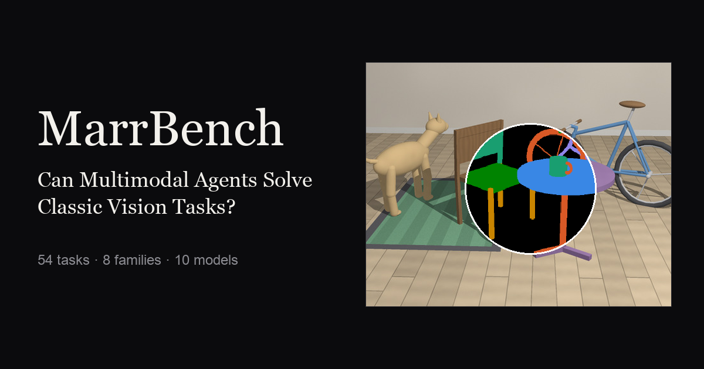

MarrBench
A benchmark that asks multimodal agents to solve 54 classic computer vision tasks using their own visual perception and executable programs.
Foundation Models · Agents · Embodied AI
Ocean Mind Lab advances foundation models, intelligent agents, world models, and embodied intelligence—connecting large-scale learning with perception, reasoning, interaction, and action in the physical world.
01 / About
We develop large models and agents that learn representations of the world, reason over complex environments, and turn intelligence into reliable action. Our research spans multimodal learning, world modeling, agent systems, computer vision, and embodied AI.
Our team brings together nationally recognized researchers, scientists named among the world’s top 2%, and scholars with publications at CVPR, ICCV, NeurIPS, ICLR, and ICML, including service as area chairs in the field.
02 / Projects
Open project pages, code, datasets, papers, and evaluation resources.

A benchmark that asks multimodal agents to solve 54 classic computer vision tasks using their own visual perception and executable programs.